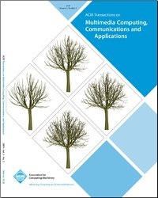
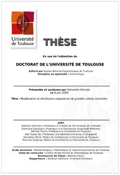
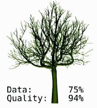
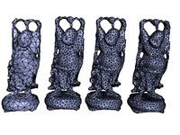
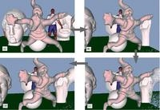

Publications List
| Modeling Progressive Mesh Streaming: Does Data Dependency Matter? Wei Cheng, Wei Tsang Ooi, Sebastien Mondet, Géraldine Morin, and Romulus Grigoras. ACM TOMCCAP, Vol. 7, Is. 2, 2011. [DOI] |
| Resource-Aware Complex Event Processing for Mobile Ubiquitous Environments. Piotr Kamisiński, Sebastien Mondet, Vera Goebel, and Thomas Plagemann. UbiComp'10; OPPORTUNITY Workshop, 2010. [URL] |
| Network-Aware Streaming of Partially Ordered Media. Wei Cheng, Sebastien Mondet, Wei Tsang Ooi, Romulus Grigoras, and Géraldine Morin. IEEE COMSOC MMTC E-letter Volume 5, Number 6, 2010. [URL, PDF] |
| A demonstration of MobiTree: progressive 3D tree models streaming on mobile clients. Andra Doran, Sebastien Mondet, Romulus Grigoras, Géraldine Morin, Wei Tsang Ooi, and Frédéric Boudon. ACM Multimedia (Technical Demonstration), 2009. [PDF, DOI] |
{kind=link}
|  | Compact and progressive plant models for streaming in networked virtual environments. Sebastien Mondet, Wei Cheng, Géraldine Morin, Romulus Grigoras, Frédéric Boudon, and Wei Tsang Ooi. ACM TOMCCAP, Vol. 5, Is. 3, 2009. [DOI] |
{kind=link}
|  | Adaptive Modeling and Distribution of Large Natural Scenes. Sebastien Mondet. PhD Thesis of the University of Toulouse, 2009. [URL] Defended on June 8, 2009; awarded of the Léopold Escande Price 2009. |
{kind=link}
{kind=link}
| On Streaming of Realistic 3D Models. Sebastien Mondet, Wei Cheng, Géraldine Morin, and Romulus Grigoras. SinFra symposium, 2009. |
|  | Streaming of Plants in Distributed Virtual Environments. Sebastien Mondet, Wei Cheng, Géraldine Morin, Romulus Grigoras, Frédéric Boudon, and Wei Tsang Ooi. 16th ACM international conference on Multimedia, 2008. [PDF, DOI] Best Paper Award. |
{kind=link}
|  | An Analytical Model for Progressive Mesh Streaming. Wei Cheng, Wei Tsang Ooi, Sebastien Mondet, Géraldine Morin, and Romulus Grigoras. 15th ACM international conference on Multimedia, 2007. [PDF, DOI] |
{kind=link}
| Compression progressive de modèles de plantes à base de cylindres généralisés. Sebastien Mondet, Frédéric Boudon, Jean-Christophe Hoelt, Géraldine Morin, Romulus Grigoras, Christophe Pradal, and Mathias Paulin. AFIG, 2007 (in French). |
| Optimized Box-Trees For Server-side Viewpoint Culling On Large 3D Scenes. Sebastien Mondet, Géraldine Morin, and Romulus Grigoras. GTMG, 2007. |
| Mise en ligne de modèles 3D echelonables basés points. Sebastien Mondet, Géraldine Morin, and Romulus Grigoras. AFIG, 2005 (in French). [PDF] |
|  | Mise en ligne de modèles 3D echelonables basés points. Sebastien Mondet. Master Thesis of the INP Toulouse, 2005 (in French). [PDF] |
{kind=link}